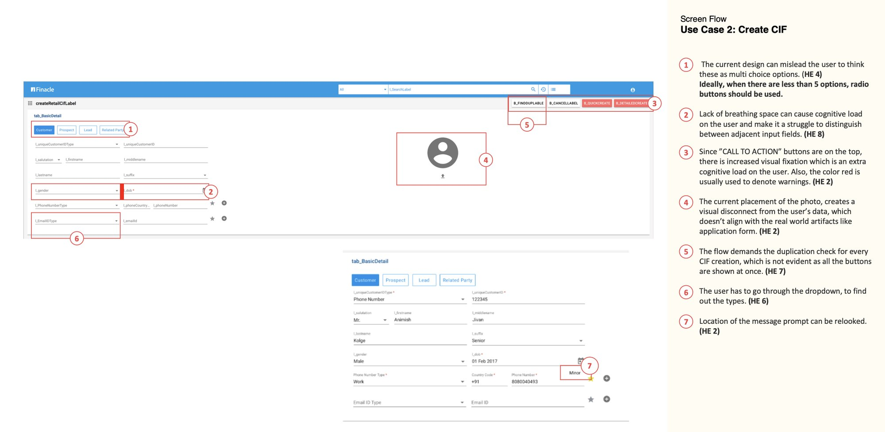
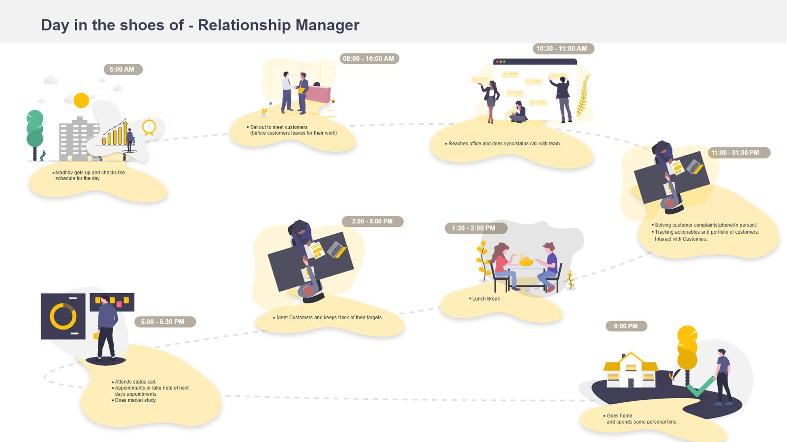
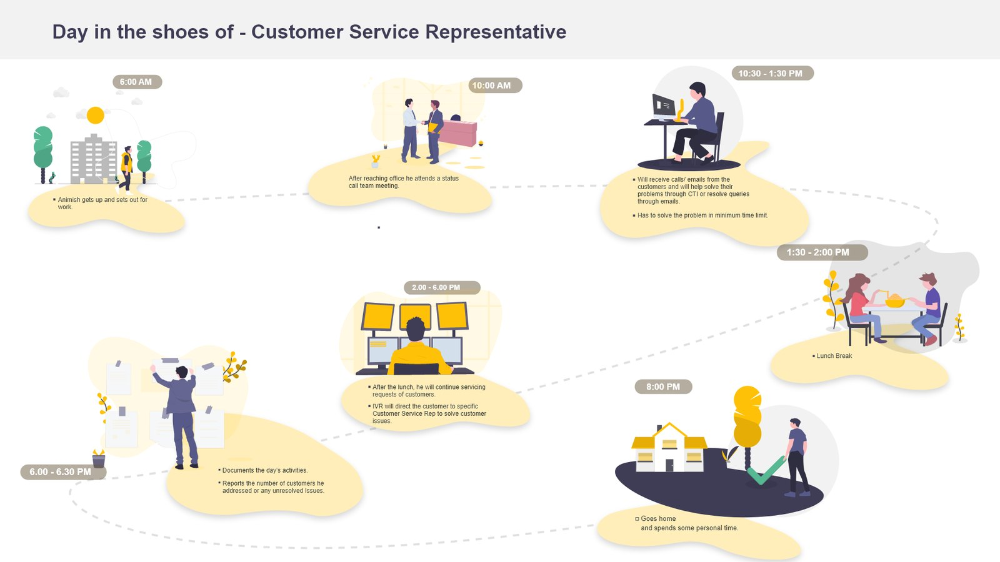
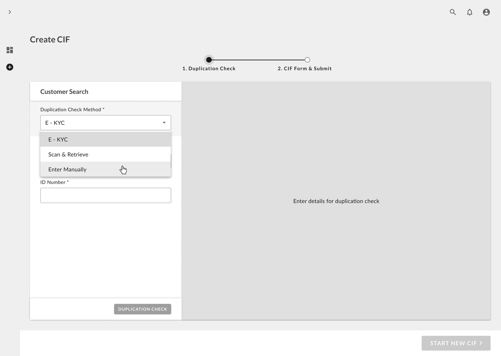
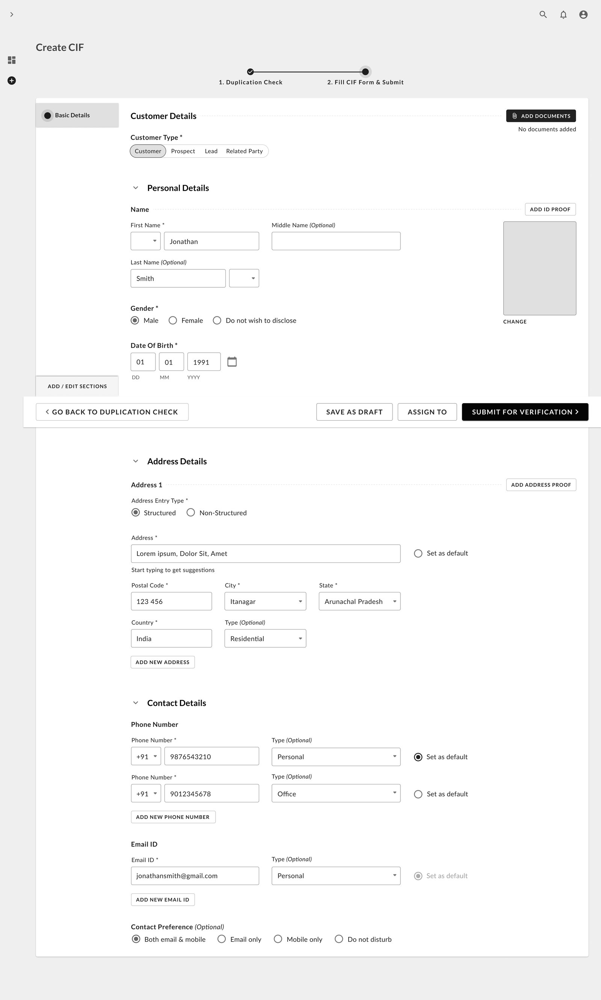
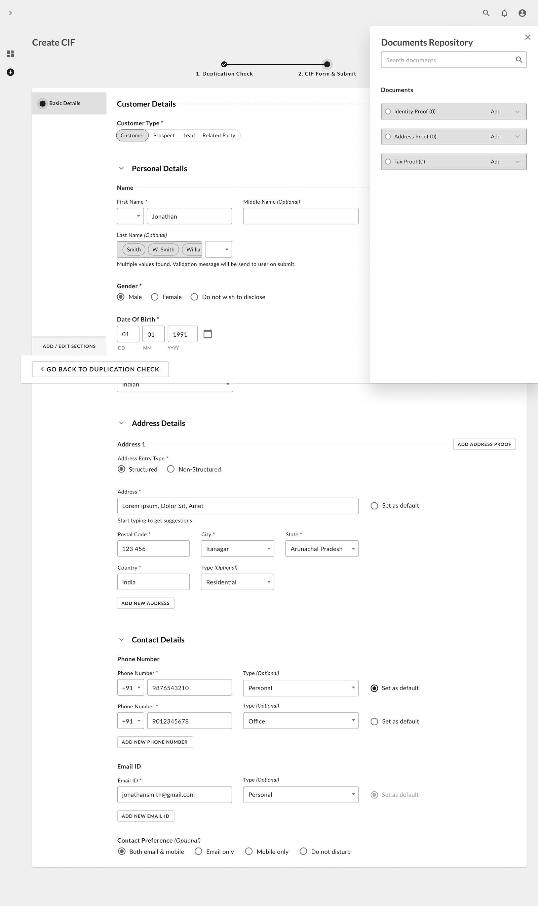
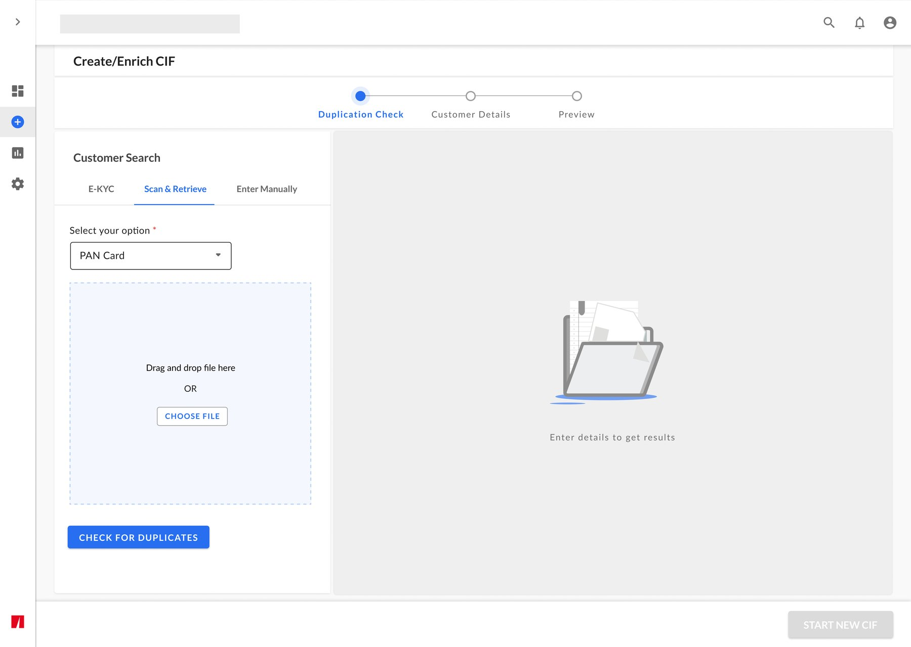
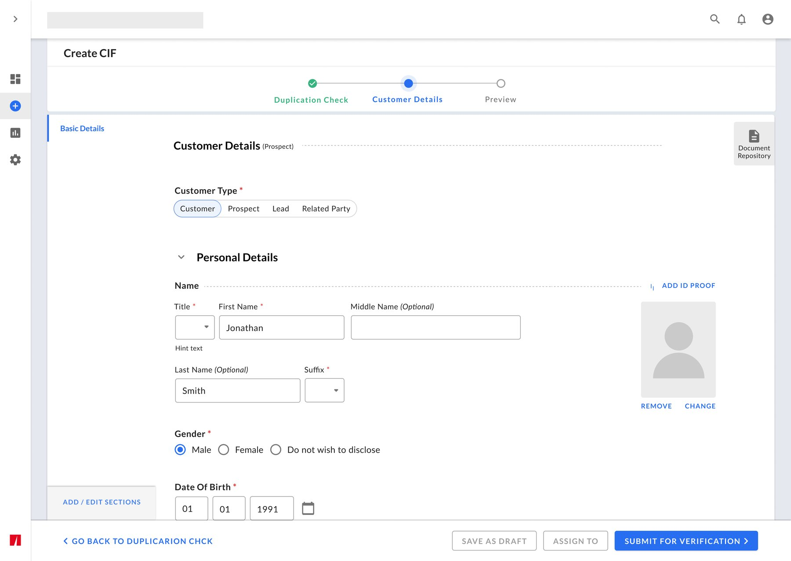
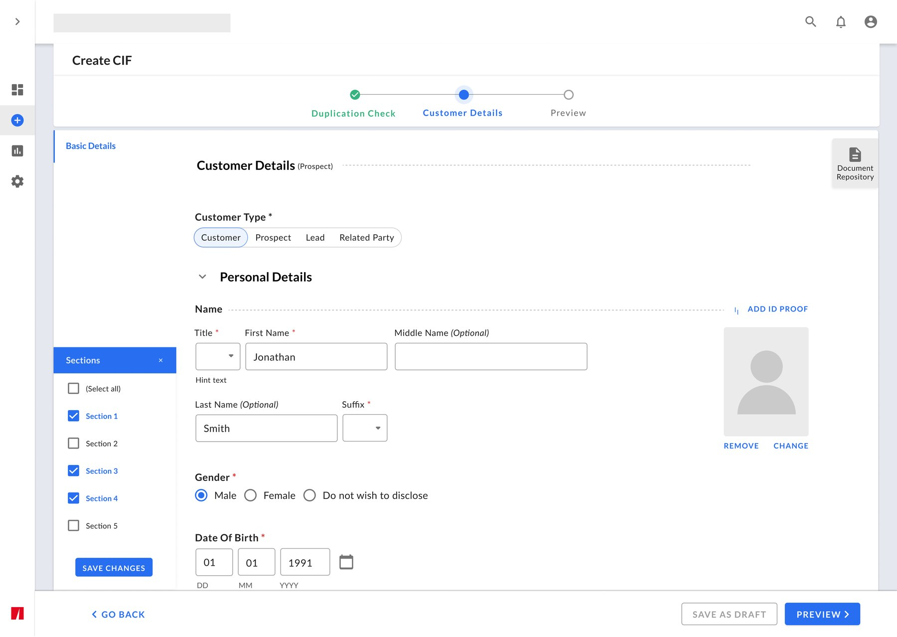
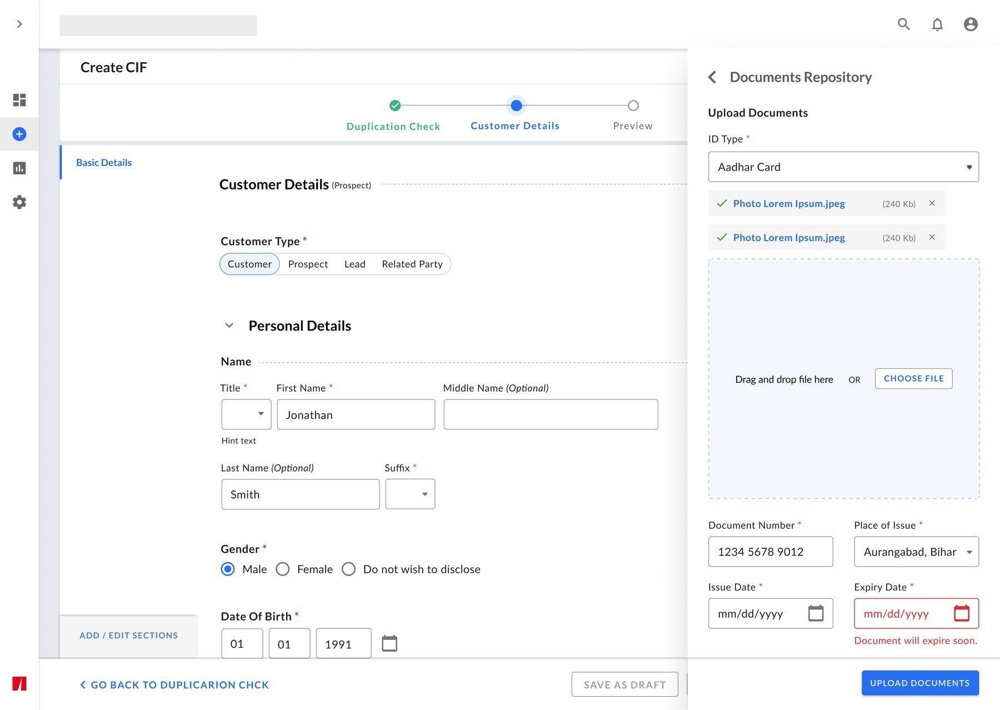

Featured StoryB2B SaaS · Core banking · 2019Infosys Finacle
Rebuilding a 17-year-old banking system, starting with one form
I helped re-imagine customer onboarding (CIF) in Infosys Finacle, and built the design system the whole Finacle revamp would run on.
Role
Junior DesignerCIF team · design system owner
Team
4 designersAnimish, Neha, Sachin, Thomas
Timeline
From Feb 2019Infosys Digital
Methods
Audit → UIHeuristics · workshops · personas · wireframes · design system
7→3Steps to create a customer record
10→6 minTo create a CIF, 40% faster
~28Components in the Finacle design system
The new Create CIF, built on the Finacle design system
0117 years of features, zero UX reviews
CIF, the Customer Information File, is where every bank relationship begins. Finacle's CIF module was built in 2002 and had never had a UX review since.
New features kept getting bolted on without rethinking the whole. The result was a dense, code-labelled, inconsistent interface that bank staff had to memorise rather than understand.
The brief
Finacle wanted a new UI for the entire product. CIF onboarding was the starting point: if it worked here, the thinking could scale to every module.
02Two tracks, running in parallel
Redesigning CIF and building the design system ran side by side, so every new screen was built on the shared language as it formed.
CIF redesign
Heuristic evaluation Step 1
Stakeholder workshop Step 2
Personas & journeys Step 3
Wireframes Step 4
Final UI Step 5
In parallel
Finacle design system
03Learning the system by auditing it
Step 1 · Heuristic evaluation We scored five use cases against Nielsen's 10 heuristics plus 12 content parameters. It taught us the CIF flow and surfaced 30+ issues.
Create CIF
Uncategorised fields, red CTAs at the top, a hidden duplicate check, a 3-click date picker.
Task Box
Cards on cards, code-style labels, statuses hard to tell apart.
360° Dashboard
No section hierarchy; cards that looked clickable but weren't.
Dialogs & Search
Pop-ups far from their trigger; recent and live results mixed together.
The root cause
No information architecture, no navigation model, no shared design language. Our report recommended a dashboard, a new IA, a new navigation model, and a design system.

Heuristic evaluation · Use case 2
Create CIF, audited
Seven issues on one screen, each mapped to a Nielsen heuristic: misleading tabs, cramped fields, red CTAs at the top, a hidden duplication check, and more. Click the thumbnail to enlarge.
Step 2 · Stakeholder workshop Finacle is one SaaS product configured for many banks, so we couldn't design for a single client. We ran a deep-dive workshop with product stakeholders to agree what the platform must become, before drawing a screen.
Agenda of the workshop
Capturing requirements Activity 1
Capturing pain points Activity 2
User personas Activity 3
Future mapping Activity 4
Activity 1 · Capturing requirements
Product stakeholders were asked to envision the product five years from now: how it should bring value to their customers and make its mark in the market. About an hour of discussion produced 23 keywords we believed would be instrumental in re-imagining the product. In the next meeting they were prioritised into primary, secondary and tertiary.
Capturing requirements with product stakeholders · blurred for privacy
01Moving CIF to CRM
02Relationships
03System of engagement
04Relevant (real time)
05Responsible system
06Open
07Intelligent (analytics, ML, AI)
08Conversational
09Reduce customer churn
10Real-time / relevant data record
11Robust and simple
12Compatibility
13Quick and responsive
14Inclusive of demographics
15Language
16Extensible to other domains
17Global banking product
18Configurability
19Personalization
20Intuitive, dynamic
21Quick edit / view
22Analytics / intelligence
23Risk profile / assisting
Grouping keywords into themes
In a follow-up session the 23 keywords were sorted into four groups. Grouping made it easier to call out the important keywords and carry them into the requirement matrix.
Grouping the keywords · blurred for privacy
Usability6
Simple
Quick and responsive
Intuitive
Configurable
Personalization
Support data privacy
Functionality3
Relationship
Data accuracy
Regulation and compliance
Performance1
Robust
Analytics1
Intelligent
Prioritisation: the requirement matrix
The requirement matrix captures every requirement proposed by stakeholders, and its traceability, in one document. It maps user requirements to test cases, so no functionality is missed while designing.
Plotting the primary requirements on the matrix gave us this hierarchy.
Matrix plotted from the identified requirements · blurred for privacy
Hierarchy from the matrix
Data accuracy
Regulations & compliance
Configuration
Relationship
Personalization
Support data privacy
Quick & responsive
Simple
Intuitive
Intelligent
Activity 2 · Capturing pain points
Stakeholders voiced the obstacles they would face in reaching their vision for the product. The discussion gave us a clearer view of what stood between the team and its goals.
Capturing pain points · blurred for privacy
01
Incomplete & inconsistent
The product had grown piece by piece, with gaps and contradictions.
02
Current architecture
Technology limits on what could change, and how fast.
03
People's mindset
A service culture used to working around the system.
04
Market insights
Little view of what competitors and customers expected.
05
No user research or A/B testing
Decisions made without evidence from real users.
Why this matters for a SaaS product
One codebase serves many banks and many roles. Ranking configuration third, right after accuracy and compliance, told us the design had to flex per bank and per role instead of being built for one client.
0518 roles use CIF every day
Step 3 · User personas This activity helped us build empathy with target users, focus on their world, share insights with other stakeholders, and gauge our designs' effectiveness through their eyes. Together with stakeholders we listed every role that uses CIF in daily work, then highlighted the four that use it most.
Building personas with stakeholders · blurred for privacy
All 18 roles · primary roles highlighted
Global Relationship Manager
Relationship Manager
Branch Manager
Teller
Ops Manager
Back Ops
Officer
Customer Service Representative
Lead
Team
Admin
Senior Teller
Branch Operation Manager
Cluster Manager
Regional Manager
Zonal Manager
Auditors
Compliance Officers
We went deep on the two who use CIF most differently: a field-facing Relationship Manager and a call-centre Customer Service Rep.
Relationship Manager
Madhav L.
MBA graduate · Age 30 · Works 10–11 hours
Apps used
Social media
Fintech apps
ET Money
News
Challenges
Insufficient, inefficient applications for business operations
Outdated applications
Not open to spending much time on learning
Dealing with fraudulent customers
Can't send confirmation to customers
Expects the system to be more intuitive and suggestive
Skill set
Product and market trend awareness
Convincing ability
Ability to forecast
Tech-savvy; gives IT feedback on better solutions
Targets
Manage relationships; cross-sell and up-sell
Zero complaints from customers
Stay in touch and suggest accordingly
Track loan reports and customer KYCs on time
Manage appointments; grow the portfolio
Customer Service Representative
Contact-centre agent
12th pass · Age 28 · 8-hour shifts
Apps used
Call-centre application (CTI)
IP telephony system
Core banking (limited access)
Social media, email
Challenges
Handling angry customers
System inefficiency
Lack of business process knowledge
Unfriendly work environment
Skill set
Good at communication
Good knowledge of e-banking applications
Aware of banking processes to guide customers
Targets
Minimal time to solve a customer problem
Solve the maximum number of queries a day
Least hold time for customers
Satisfy every customer
A day in the shoes of a Relationship Manager
Wakes up and checks the day's schedule
Sets out to meet customers before they leave for work
Reaches office; status call with the team
Solves complaints by phone and in person; tracks actionables and portfolio
Lunch
Meets customers and tracks targets
Status call; notes next day's appointments; market study
Home, personal time

A day in the shoes of a Customer Service Rep
Gets up and sets out for work
Status-call meeting with the team
Takes calls and emails through the CTI app; must solve each in minimum time
Lunch
Continues servicing requests routed by IVR
Documents the day; reports customers addressed and unresolved issues
Home, personal time

One CIF had to serve both: guided for the novice, fast for the expert.
06Bankers don't have time to type
Insights · Talking to real bankers We combined three sources: the heuristic evaluation, stakeholder interviews, and conversations with bankers who use Finacle every day.
Source 1
Heuristic evaluation
Where the interface breaks usability and content rules.
Source 2
Stakeholder interviews
What the business needs and what opening an account really requires.
Source 3
Banker conversations
How people who open accounts daily actually work with Finacle.
What we observed
Bankers don't have time to enter lots of information.
The screens show unnecessary information; there are too many things on them.
The information architecture is missing: nothing tells the banker what matters first.
Three problems worth solving
Problem 1
Duplicates found only at the end
The banker filled every field and pressed submit, and only then learned the customer already had an account. 10–15 minutes, sometimes half an hour, wasted.
Problem 2
Too much information, no structure
Unnecessary fields and no information architecture made a simple task feel heavy.
Problem 3
Everything asked up front
Extra details and documents were part of one long form, even when the account didn't need them yet.
Design goal
Minimise what the banker has to do, and keep the focus on the information that matters.
07Verify first, then fill only what's needed
Solution · The new flow With stakeholders we split the journey in two: duplicate verification, then form filling.
Part 1Duplicate verification
Choose one way to find the customer
eKYCAadhaar, PAN + number
ScanScan ID, auto-fill
Enter detailsType and search
↓
Does the customer already exist?
Yes, match foundShow the customer's detailsNo new account needed.
No matchStart the form-filling journey →
Part 2Form filling
Only what opening an account needs
Personal details
Address details
Contact details
ID proof
+ Add a sectionOnly if needed, e.g. home loan
+ Add documentOwn page, upload all at once
↓
Save as draft
Previewread-only
↓
Save draftfinish later
Assign toe.g. home loan dept
Submitfor verification
↓
Account created
Problem → solution in the UI
Problem
Solution in the UI
Duplicate found only after filling the whole form
Duplicate verification is the first step, with three ways to search: eKYC, scan or enter details
Too much unnecessary information
Form trimmed to four core sections agreed with stakeholders
Extra details asked up front
"Add a section" adds extra information only when the case needs it
Documents tied to form filling
A separate "Add document" page; upload everything at once, whenever ready
No way to pause or hand off
Save as draft, read-only Preview, Assign to another department, or Submit for verification
08One overloaded screen became three guided steps
Step 4 · WireframesDuplication Check → Customer Details → Preview. Every change traces back to an audit finding.
Before
After
Mandatory duplicate check hidden among equal buttons
Duplication check is step 1: eKYC, scan or enter details
One long scrolling form, no grouping
Sections with a side nav counting mandatory fields left
Customer type buried in a dropdown
Visible content switcher for customer type
No guidance for document upload
Drag-and-drop upload plus a document repository panel
Red CTAs at the top, read as warnings
Primary actions at the bottom: Assign To, Submit

Step 1: check for duplicates by eKYC, scan or entering details

Scroll ↓Step 2: sectioned form with mandatory-field count

Scroll ↓Documents uploaded once, viewed from a side panel
09The new Create CIF, built on the design system
Step 5 · Final UI High-fidelity screens using Finacle's new components, colour and type.

Step 1 · Duplication Check

Step 2 · Customer Details

Step 3 · Add section details

Step 4 · Upload documents
10Fixing the cause, not the screens
Inconsistency was the root problem, so I was picked from the CIF team to build a design system for all of Finacle. Built on Material principles, flexible enough to carry each bank's own brand.
Colour
Finacle Blue #276EF1, tints checked against WCAG AA. Light and dark palettes.
Typography
Aa
Lato, specified from Headline 1 (96px) down to Overline.